CKM | Stage 0 | Stage 1 | Stage 2 | Stage 3 | Stage 4 |
|---|---|---|---|---|---|
Age (yrs) | |||||
Mean (SD) | 34.1 (12.4) | 38.9 (14.1) | 48.5 (15.1) | 76.7 (7.44) | 68.8 (12.8) |
Median [Min, Max] | 32.0 [20.0, 85.0] | 36.0 [20.0, 85.0] | 48.0 [20.0, 85.0] | 78.0 [32.0, 85.0] | 70.0 [26.0, 85.0] |
Female | 67.56% | 55.47% | 48.25% | 43.78% | 42.72% |
MVPA (min/day) | |||||
Mean (SD) | 27.0 (22.6) | 21.7 (21.1) | 18.2 (19.9) | 6.45 (10.3) | 7.39 (12.1) |
Median [Min, Max] | 21.9 [0, 187] | 15.7 [0, 181] | 11.9 [0, 175] | 2.43 [0, 83.7] | 2.43 [0, 107] |
Diabetes | 0.00% | 0.00% | 12.06% | 33.42% | 35.15% |
Hypertension | 0.00% | 0.00% | 72.55% | 93.78% | 94.91% |
Data Visualization Principles
Challenges and Best Practices
statistical practice
visualization
data exploration
NHANES 2003-2006
Factors of interest
CKM Stage
Minutes of objective Moderate-to-Vigorous Physical Activity (MVPA)
Troponin T
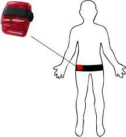
Actigraph GT3X [1]
“Table 1”
We use the table1 R package to make a simple, standard table 1:
We can increase the information density by removing unnecessary information:
CKM | Stage 0 | Stage 1 | Stage 2 | Stage 3 | Stage 4 |
|---|---|---|---|---|---|
MVPA (min/day) | 27.0 (25.0, 29.0) | 21.7 (20.5, 22.9) | 18.2 (17.6, 18.8) | 6.4 (5.7, 7.2) | 7.4 (6.6, 8.2) |
Age (yrs) | 34.1 (33.0, 35.2) | 38.9 (38.1, 39.7) | 48.5 (48.1, 49.0) | 76.7 (76.1, 77.2) | 68.8 (68.0, 69.7) |
Female | 68% | 55% | 48% | 44% | 43% |
Diabetes | 0% | 0% | 12% | 33% | 35% |
Hypertension | 0% | 0% | 73% | 94% | 95% |
It is easier to perform comparisons vertically, rather than horizontally:
CKM Stage | N | MVPA | Age | Female | Diabetes | Hypertension | ||||
|---|---|---|---|---|---|---|---|---|---|---|
Stage 0 | 487 | 27.0 | (26.9, | 27.1) | 34 | [24, | 40] | 68% | 0% | 0% |
Stage 1 | 1,179 | 21.7 | (21.7, | 21.7) | 39 | [28, | 47] | 55% | 0% | 0% |
Stage 2 | 3,963 | 18.2 | (18.2, | 18.2) | 49 | [37, | 61] | 48% | 12% | 73% |
Stage 3 | 772 | 6.4 | (6.4, | 6.4) | 77 | [72, | 83] | 44% | 33% | 94% |
Stage 4 | 845 | 7.4 | (7.4, | 7.4) | 69 | [61, | 80] | 43% | 35% | 95% |
Grouping by proximity (Gestalt Principle)
Data-ink-ratio (Tufte)
Encourage comparison (Tufte)
Vertical contrasts are easier (Broman)
MVPA by CKM Status
We first leverage a standard bar chart with uncertainty bounds to first visualize the mean minutes of MVPA by CKM status:
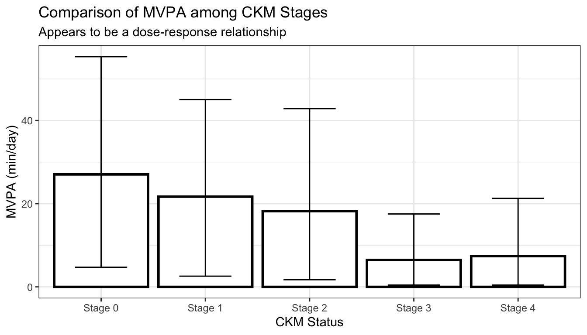
We can show a subsample of the actual data, and remove the bar portions which provide no additional information:
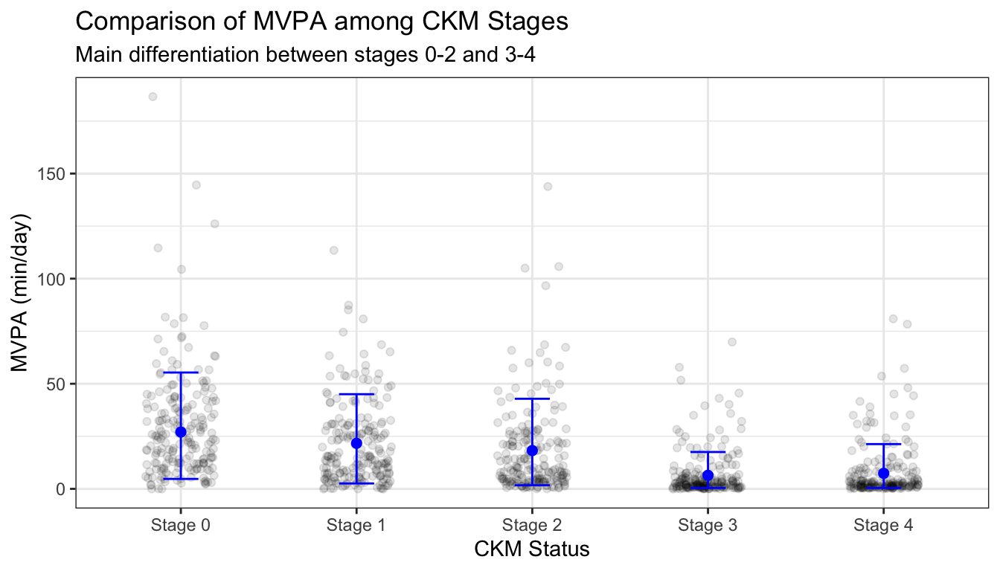
We can invite comparison by linking the points together with a line, and scale the right-skewed data with a log transformation:
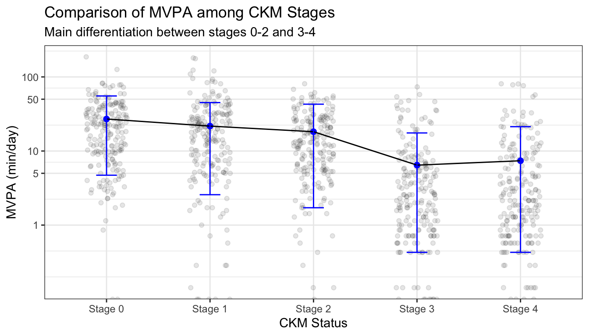
Show the data (Tufte)
Data-ink-ratio (Tufte)
Data transforms (Broman)
Grouping by continuity (Gestalt Principal)
MVPA by CKM Cont.
Histograms are a common method for visualizing distributions such as that of MVPA within each CKM status:
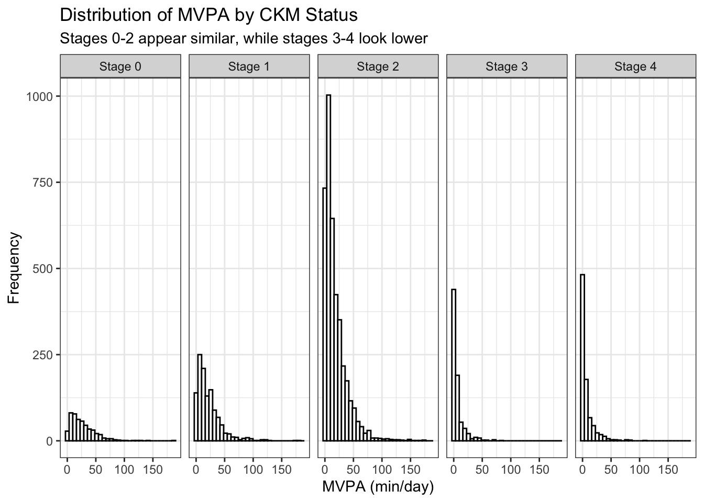
We cannot really compare the histograms due to the information of interest being along the x-axis and the differing summative frequencies. We can instead vertically stack density plots:
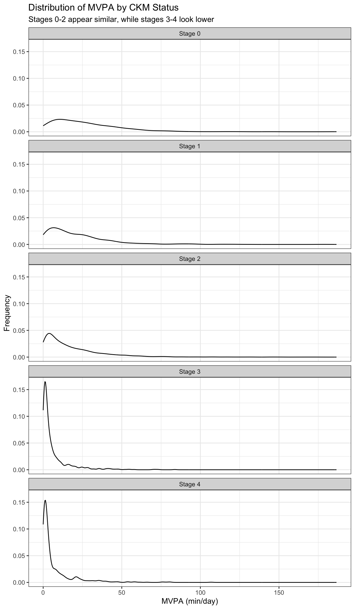
The vertical stack of density plots is still not optimal for comparison, so we can overlay them on one plot with appropriate coloration.
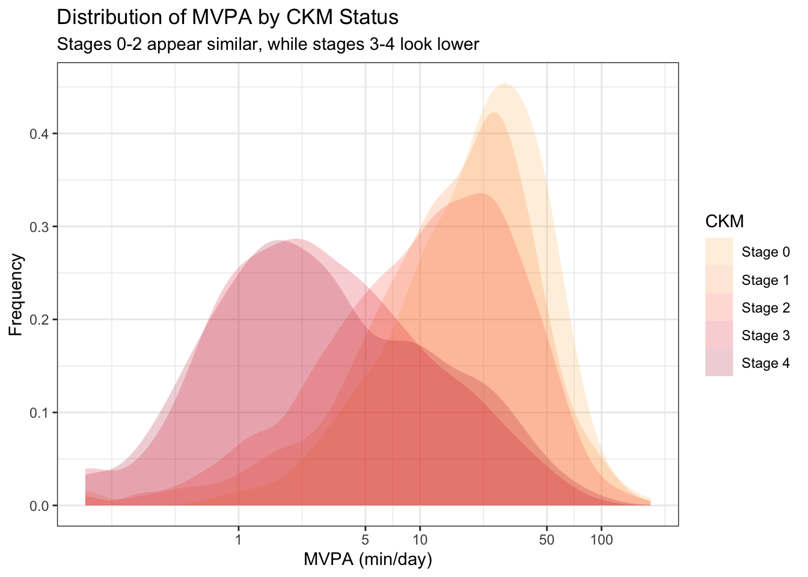
Data density (Tufte)
Same scales (Broman)
Data transforms (Broman)
Rapid vs deliberate thinking (Kahneman)
AHA Activity Guideline
To visualize the CKM status compositions within the subpopulations meeting and not meeting the AHA MVPA guideline, a first thought might be to use pie charts. This makes some sense, as we wish to display proportions within each group:
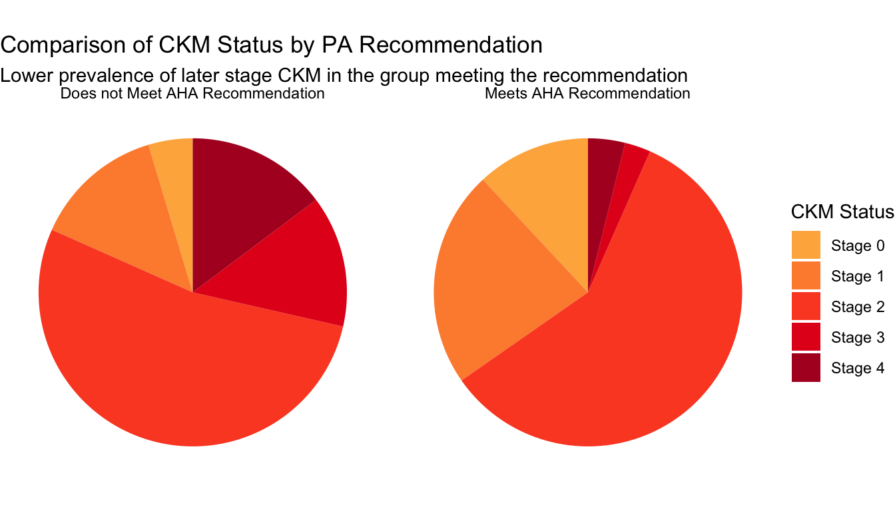
Pie charts are notoriously difficult to accurately read, so we can transition to a stacked bar chart:
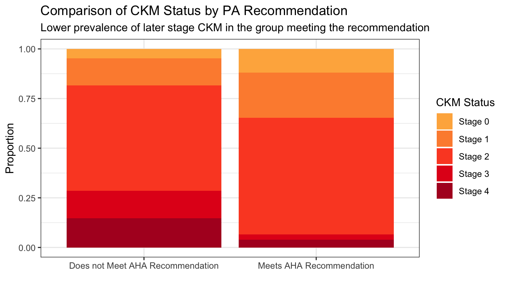
While the stacked bar chart is an improvement, the relevant lengths are not juxtaposed to perform the comparison of interest. We can arrange them instead using a standard bar chart:
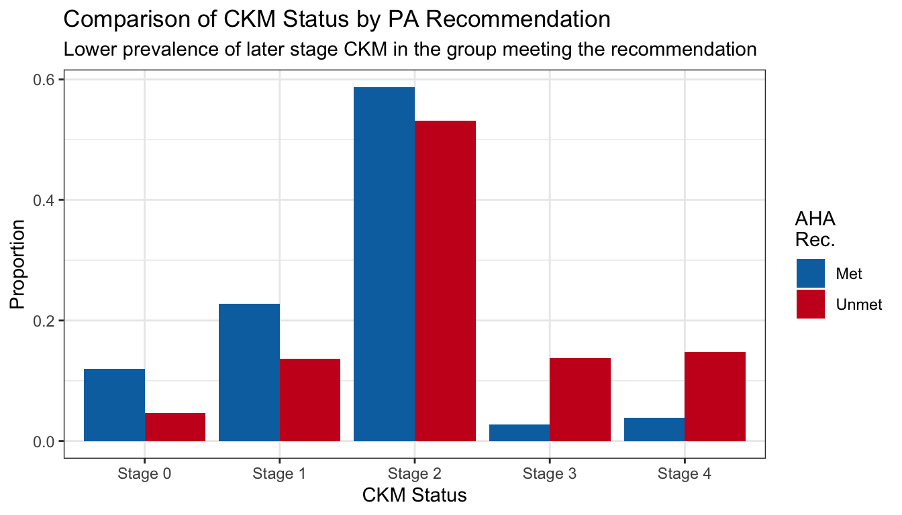
Easy comparison (Broman, Tufte, Simkin and Hastie)
Grouping by proximity (Gestalt Principle)
MVPA vs Troponin T
We first model the expected probability of elevated troponin (by sex-specific cutpoint), adjusting for the known confounder of age.
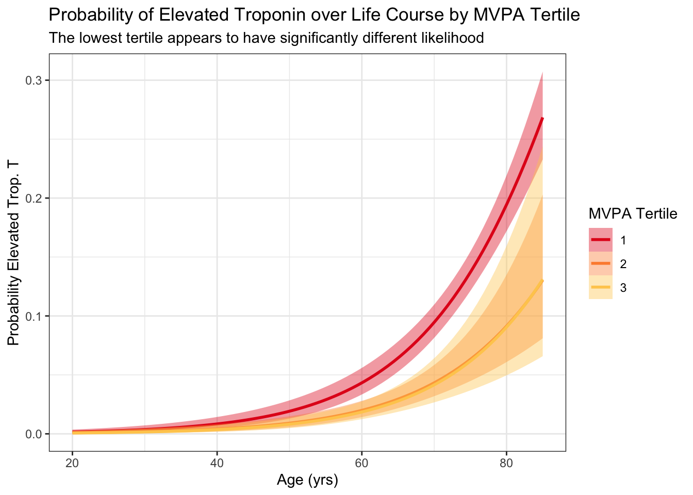
Wisualizing expected probability of exceeding this threshold, particularly just using a model, obfuscates the data. Instead we can simply plot troponin vs activity and corresponding smooths, stratified by age:
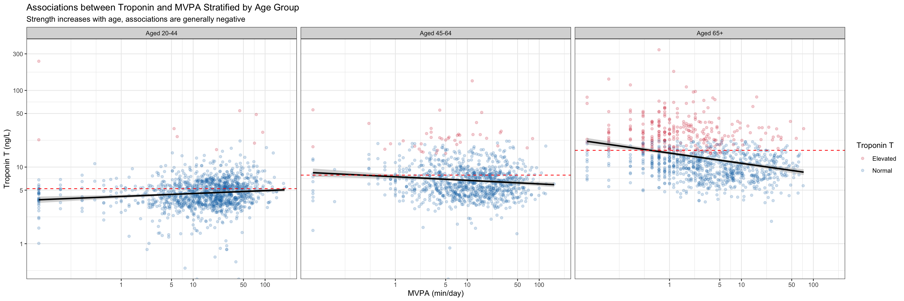
We want to both understand the marginal distributions of activity and troponin by age group, as well as the association between these two around the AHA recommendation. For these purposes, and to ease comparison, we combine into a single plot with marginal visualizations and a magnification plot:
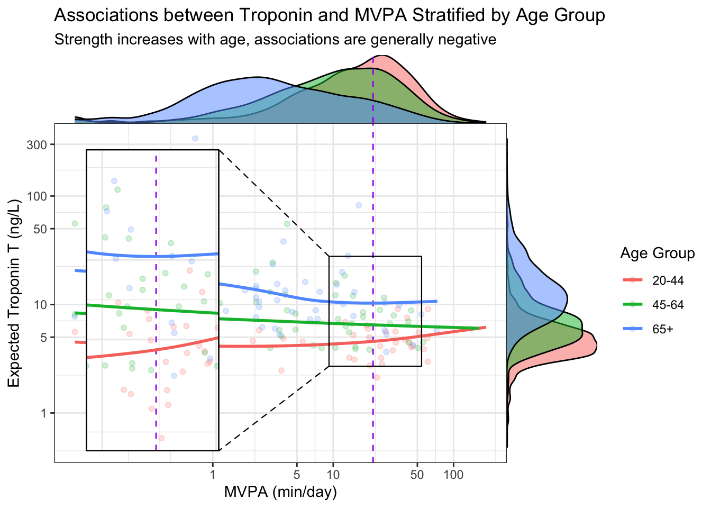
Let the data talk (Tufte, Broman)
Rapid AND deliberate elements (Kahneman)
Visualize multiple scales (Tufte)
Grouping by enclosure (Gestalt Principle)
Further Reading
[1]
Thornton C, Kolehmainen N, Nazarpour K. Using unsupervised machine learning to quantify physical activity from accelerometry in a diverse and rapidly changing population. PLOS Digital Health 2023;2:e0000220. https://doi.org/10.1371/journal.pdig.0000220.
[2]
Kahneman D. Attention and effort. Prentice-Hall; 1973.
[3]
Tufte ER. The visual display of quantitative information. Second. Cheshire, Connecticut: Graphics Press; 2001.
[4]
What are the Gestalt Principles? — updated 2024. The Interaction Design Foundation n.d.
[5]
Simkin D, Hastie R. An Information-Processing Analysis of Graph Perception. Journal of the American Statistical Association 1987;82:454–65. https://doi.org/10.1080/01621459.1987.10478448.
[6]
Broman K. Advanced data analysis 2020.
[7]
Padilla LM, Creem-Regehr SH, Hegarty M, Stefanucci JK. Decision making with visualizations: A cognitive framework across disciplines. Cognitive Research: Principles and Implications 2018;3:29. https://doi.org/10.1186/s41235-018-0120-9.